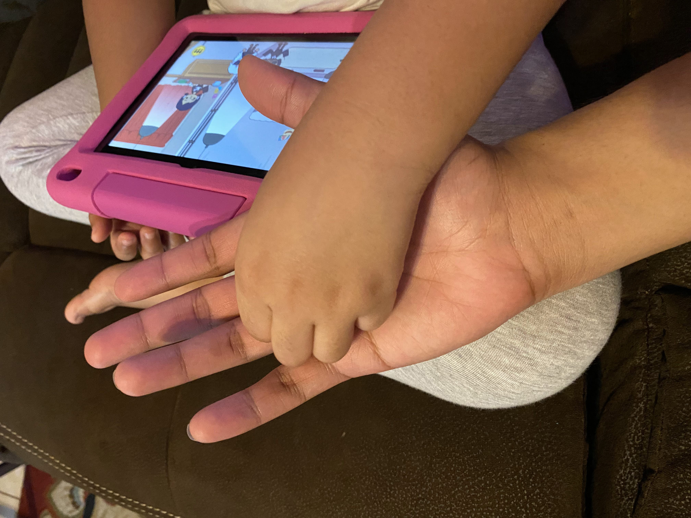
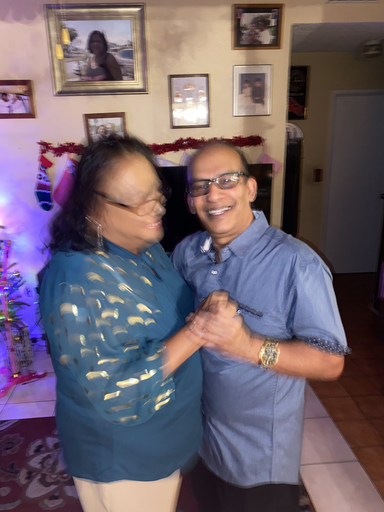

I’ve been resisting grand proclamations.
I came across this essay by Som-Mai Nguyen, Blunt Force Ethnic Credibility, critiquing how diasporic writers write about their histories, cultures, and places of origin with an unearned ethnic credibility to places they've never been to and cultures they aren't necessarily experts on. Engaging with my diasporic identity to signal any sort of this ethnic credibility or ownership is simplifying and stupid at best, silencing and solipsistic at worst.
I’ve been resisting grand proclamations because singularity is a tool of control.
In order to wield a sword, a smith casts steel into a single shape, hammering it down to become sharper and sharper into a single point. I want to refuse the temptation to become a blade that is digestabile for insititutional success. Something that can be eaten quickly and done away with. A bite-sized art-world piece of candy.
What am I calling back to when I say words like “Trinidad and Tobago” or “India” or “Hindu?"
Whose words are these? Have they not been blades too? Tempered by a Smith’s flame and a hammer to become one thing? Called upon to inflict horrific acts of violence?
I don’t want to be a sword, I want to be the sheath.
The holding thing. Ursula K. Le Guin's carrier bag. The vessel that holds it all and lets them get all mixed up and messy. Unwieldy and un-pure and impossible to control.
In The Argumentative Indian, Amartya Sen suggests that heterodoxy is essential to India’s history and past. The ability to hold, yes, that’s what a country can be right? But I don’t wanna be a country I just wanna be an embrace.
Without hands grasping at singular notions of identity or kinship, what remains? What’s left in the smallest parts of me that I can hold onto?
Most importantly, beyond these imagined communities, who is here with me?
Can I be so lucky as to stumble upon a laugh,
a palm,
a dance,
a heart?